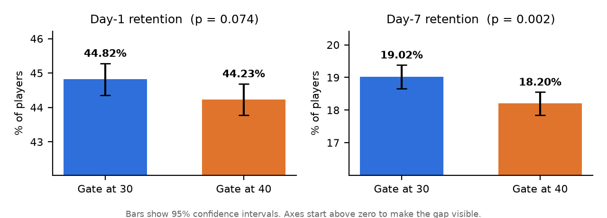

A/B test readout · Cookie Cats · first gate placement
Keep the first gate at level 30: moving it to 40 loses players
90,189 new players were randomly assigned to a first gate at level 30 (control) or level 40, and tracked for 14 days.
Recommendation: keep the gate at level 30. Moving it to level 40 cut 7-day retention by 0.82 points (4.3% relative), about 820 fewer active players per 100,000 installs, with no offsetting gain anywhere in the data.
19.0% → 18.2%7-day retention, gate 30 → 40
p = 0.0016two-proportion z-test, day 7
99.9%of 10,000 bootstrap resamples favor gate 30
312–1,328players lost per 100k installs (95% CI)

What we found
- Day 7: 19.02% vs 18.20%, a -0.82 pt difference, 95% CI [-1.33, -0.31]. Clearly negative.
- Day 1: -0.59 pts (p = 0.074): the same direction, not significant on its own.
- Robust: a bootstrap (no normal approximation) gives the same day-7 interval, [-1.33, -0.30] pts.
- Engagement: median rounds played are similar (17 vs 16). One 49,854-round account looks like a bot and was excluded from averages.
Caveats and next steps
- Uneven split: 49.56% / 50.44% instead of 50/50 (p = 0.009). Ask the data team to confirm assignment and logging didn't drop players unevenly.
- Retention ≠ revenue: gates also drive purchases, which weren't in this data. If level 40 is still on the table for monetization, rerun with purchase data.
- Don't peek: replaying this data with daily checks and no real effect gave false "wins" in 22% of tests vs 5% with one planned look. Fix the sample size and analysis date up front.